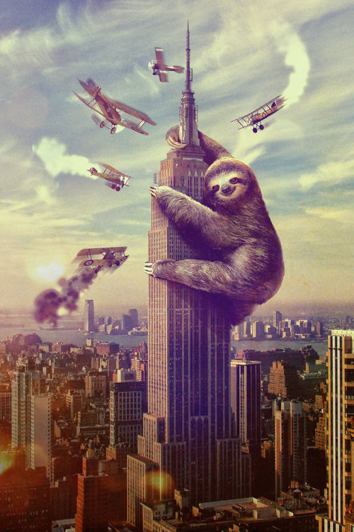
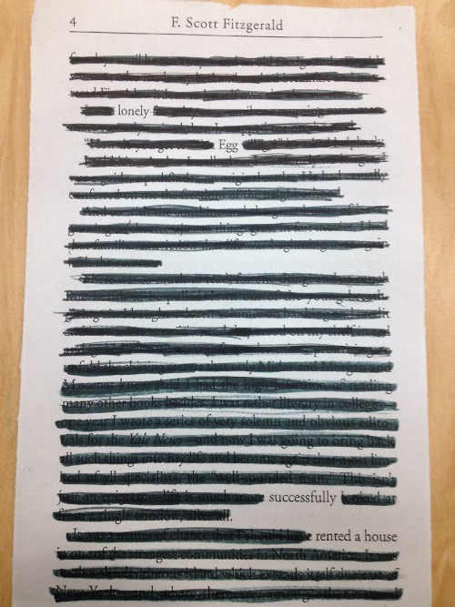

|  | The ascent was a slow one. As the sloth drew one clawed arm up over the other, she remained unencumbered by the planes whipping past. Their propellers whirling through the early morning air, the pilots gave every attempt to stop the beast, but to no avail. With a sly smile, the sloth held fast to the building. Hours passed with no change of events, save the significant lessening in the number of screams from the interior offices. This occurred as more and more people realized that to escape their certain doom they merely need to walk down the stairs and exit the building. Eventually, the planes' resources had been exhausted, and down they went. Ground attempts to shoot or reason with the sloth went unnoticed by the creature, who, after clearly a long and tiring day, soon fell fast asleep. |
Every year, thousands of tourists came to visit us in the Candy Cane Woods, their faces wide open and bright with the flash of their cameras. For them, it was the eighth wonder of the world. For us it was home. We lived in a small cabin, near the frozen river that ran diagonally through the woods, and harvested just enough canes to keep ourselves going. A rare delicacy, the Queen ate our candy canes with her Christmas tea. As did the village children, who by tradition would race through the woods the day before Christmas Eve and select the perfect candy cane — large enough to satisfy them all, small enough to break without too much force. Their whispers carried through the frosted window panes but we never minded. We merely snuggled deeper into our blankets and sipped peppermint hot chocolate in front of the fire. |
|
 |
The glow of the streetlamps rendered the couple caught between two worlds. On their left, warmth and the smell of damp earth. To their right, the water rippled with drizzling raindrops, cool and icy underneath the moon. The pavement was damp beneath their footsteps. Every so often one umbrella would bump ever so gently into the other, reminding each of the familiar presence beside them. The slender fingers of the trees may have seemed threatening on another night, but just then the couple understood something the other night did not: the trees did not bend menacingly downwards, but stretched infinitely up, reaching beyond the fog and aiming for the stars that winked into sight every so often behind the moving clouds. |
Bert rolled out of bed, not caring as he came off the ramp at a bad angle and spun towards the far wall of his room. That's what the wall padding is for I guess, he thought glumly to himself. As he left the tiny apartment, his sadness only grew. At work he was called into the main office, and some macabre aspect of himself hoped he was being fired. He recieved a substaintial raise instead. His yolk quivvered as he returned to his desk. Eggsellent news by any standard, and yet the cloud that had followed him all morning remained. Staring at the financials before him, he finally gave up attempting to focus and surfed the internet instead. He came across an ad for a house in the next neighborhood over that was for rent. His yolk was quivvering in excitement now. (His yolk quivvering was a fairly common occurance.) With his new raise, he realized, such a place would be within his price range. Almost in a trance, he called and arranged an appointment to see the house. The very next week he was moving in, rolling into the kitchen and admiring his new home. Bert knew it was meant to be when he opened the fridge and noticed the carton of eggs the previous tenants had left. |
 |